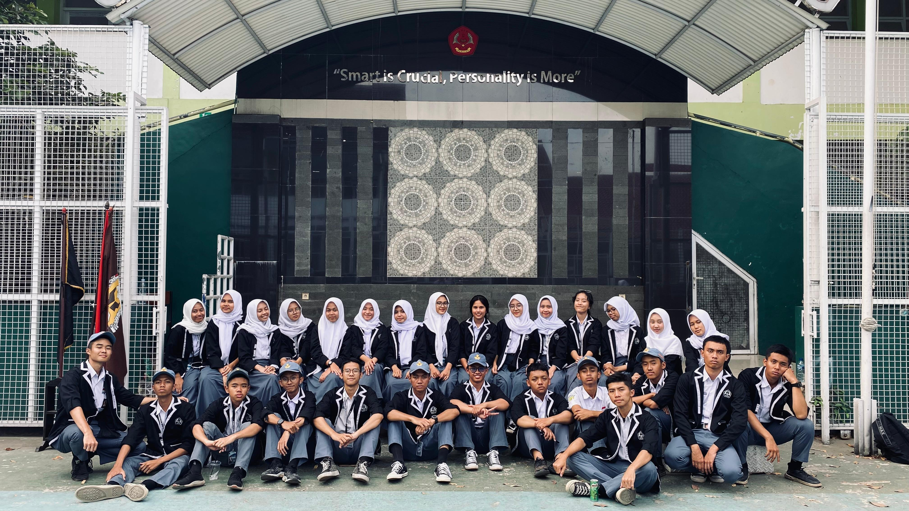
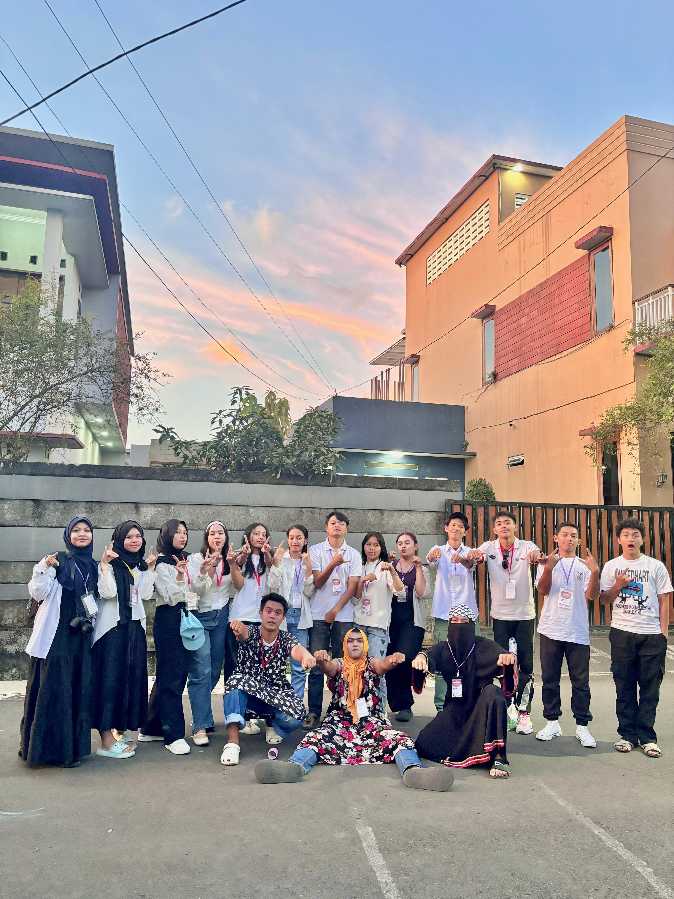
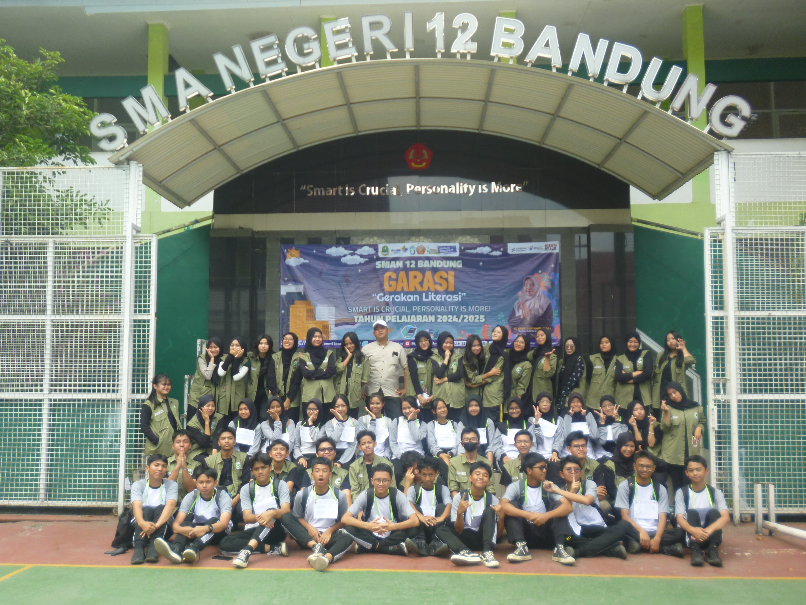

Student Informatics
Student Informatics
Lutfi Alhamsyah
Semester 3, hobi mewujudkan ide.
"Hiduplah seperti Larry"
Dokumentasi Kegiatan

Kepanitiaan & IT Fair

Ketua Pelaksana UAS Olahraga

Pemberdayaan Digital UMKM

Greenify & Kepengurusan OSIS

Latihan Dasar Kepemimpinan
Kepanitiaan & IT Fair
Ketua Pelaksana UAS Olahraga
Pemberdayaan Digital UMKM
Greenify & Kepengurusan OSIS
Latihan Dasar Kepemimpinan